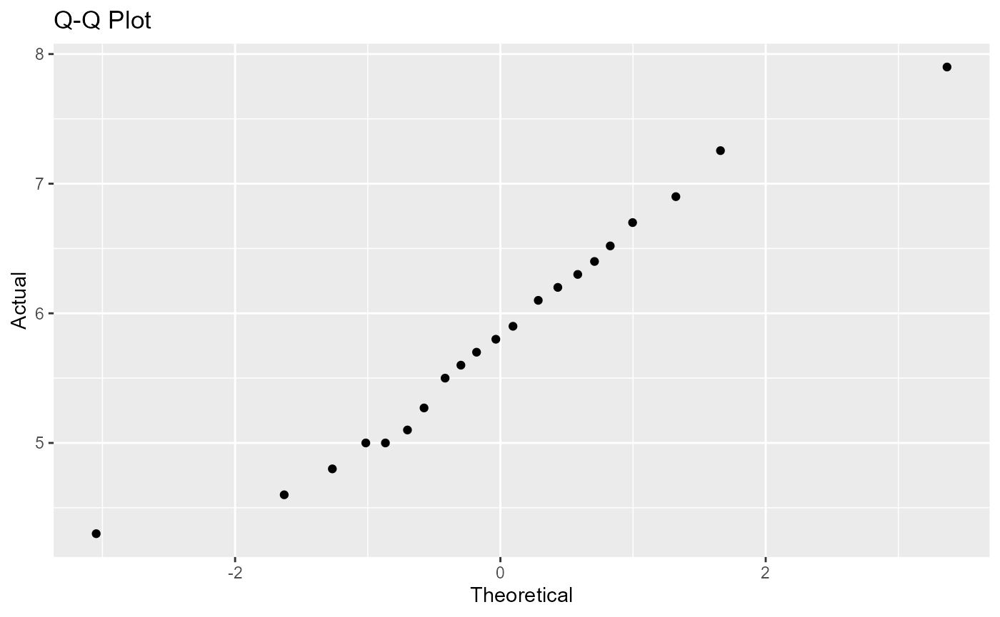

Normality Testing in R
Richie Zitomer, Sylvia Lee, Constantin Shuster
2022-12-15
my-vignette.RmdnoRmtest: This is an R package that tests your data for normality!
A common and important assumption that is made by many (and commonly used) parametric statistical methods (t-tests, ANOVA and linear regression) is that the dependent variable (response variable) is normally distributed across all categories of the independent variables (predictors). Thus testing for normality in the data is an important step before applying parametric statistical methods.
Graphical and statistical methods can be used to test whether sample data was drawn from a normal population. In normality testing it is important to remember that our null hypothesis is that the sample data is NOT different than a normal population with the same mean and variance. If we fail to reject this null hypothesis - meaning resultant p-value is > 0.05 - then we would be able to apply the appropriate parametric statistical methods to our data. Normality testing can also be used to check whether any sample data approximates a normally distributed population. More on this topic can be found here and here.
noRmtest is a package that tests your data for normality using a graphical and a statistical method on multiple variables at once. As a graphical method, quantile-quantile plots (Q-Q plot) will be constructed in order for you to visualize whether the data closely approximates a straight line - thereby indicating it is normally distributed. As a statistical method, the Shapiro-Wilk test score will be calculated along with the corresponding p-value. The Shapiro-Wilk test provides better power than most other statistical normality tests, as long as most of the values are unique, see here for more information. This package will also derive the parameters that would fit your data to a normal distribution using maximum likelihood estimation.
Package functions:
-
- description: this function will read in data and will create a QQ-plot for each continuous variable in the data. It will output a dictionary of plot objects and print them to screen as default (the user will have the option of not printing plots).
- input: dataframe, list, vector, array, or matrix
- output: list of plots
-
-
description: this function will read in data and
will output the shapiro-wilks test for normality for each continuous
variable in the data. The output will be tuple of lists where the first
list contains the test statistics in the order of the variables in the
input dataframe and the second list contains the p-values in the same
respective ordering.
- input: dataframe, list, vector, array, or matrix
-
output: tuple of lists
- first list: test statistic
- second list: p-value
-
description: this function will read in data and
will output the shapiro-wilks test for normality for each continuous
variable in the data. The output will be tuple of lists where the first
list contains the test statistics in the order of the variables in the
input dataframe and the second list contains the p-values in the same
respective ordering.
-
- description: this function will read in data and will output the mean and variance for the empirical distribution of the data given that the data is normal for each continuous variable in the data. The output will be a dataframe with one row for the mean and one row for the variance with the columns presenting the original variables in the data.
- input: dataframe, list, vector, array, or matrix
-
output: dataframe
- columns: variables
- rows: mean, variance
Examples
Consider the iris dataset with the variable
Sepal.Length and Petal.Length
head(simple_iris)## Sepal.Length Petal.Length
## 1 5.1 1.4
## 2 4.9 1.4
## 3 4.7 1.3
## 4 4.6 1.5
## 5 5.0 1.4
## 6 5.4 1.7One explorative analysis that one might consider for the dataset is
the QQ-plot. make_qqplot is a function that can
simultaneously compute construct the QQ-plot for multiple variables.
make_qqplot(simple_iris)## $Sepal.Length
##
## $Petal.LengthSimilarly, shapiro_wilk can provide insight to normality
quantitatively.
shapiro_wilk(simple_iris)## $statistic
## Sepal.Length Petal.Length
## 0.9760903 0.8762681
##
## $p.value
## Sepal.Length Petal.Length
## 1.018116e-02 7.412263e-10Once normality could be assumed for both variables,
params_mle can be used to estimate the parameters of the
normal distribution that the variables were sampled from.
params_mle(simple_iris)## Sepal.Length Petal.Length
## Mean 5.8433333 3.758000
## Variance 0.6811222 3.095503Package Limitations and Conventions
All functions in noRmtest takes the same input datatypes. As convention, if the input datatype is a dataframe, it should follow the tidy format (see tidyr vignette for more information). Similar to dataframes, variables should be defined as columns in a matrix. A limitation to note is that this package is only limited to numeric data, and is incompatible with boolean and categorical data (characters and factor data).